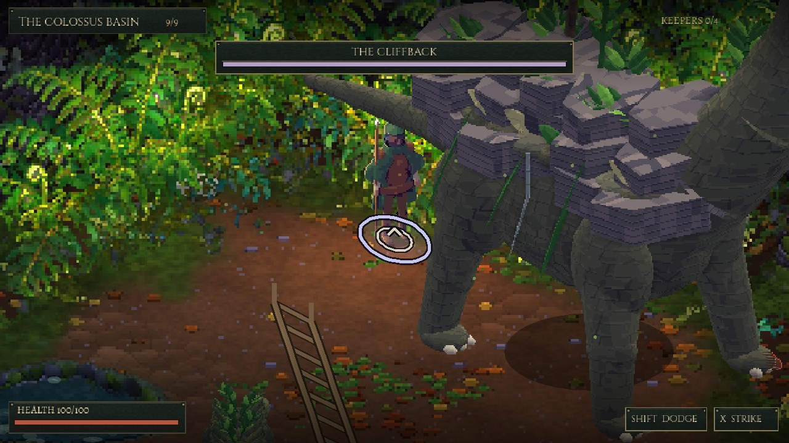
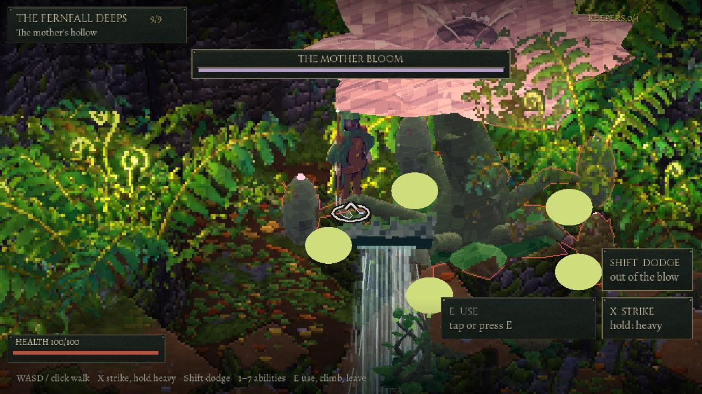

10 November 2026
Room for a giant
Making the Cliffback look enormous exposed the next problem: the fight needs enough room for a person to make choices around it.
The Fernfall Deeps review caught two kinds of crowding. At ordinary play zoom, the Cliffback can fill the picture with one leg and its rock back. In the Mother Bloom's hollow, the floor is so small that the whole space falls within her longest reach.

These are pictures of the problem from the running game. The room expansion is a separate work in progress; these are not its after pictures.
Space to answer a blow
The first step is to enlarge the deepest fighting floors while keeping their character. The Mother Bloom needs room around her roots. The amphitheatre needs a wider lowest terrace. The Cliffback's basin needs space to move around the body, with its upper ledge kept on one side. The Briarback's narrow ledge should stay narrow, because that is what makes its fight different.
The measure is the creature's own reach. There should be somewhere to retreat beyond its longest blow, and enough floor left outside a wide attack to make moving aside a real choice. The camera also needs to show both the threat and somewhere useful to go.

Changing a room has a consequence for an unfinished descent. Continue must bring you back to the cave you left, with its creatures, hoards and routes still in the right places. Room growth therefore needs to preserve existing descents while allowing a new descent to use the larger spaces.
Height should change a fight
The longer aim is to use the height already visible in the cave. From the basin's ledge, the Cliffback's head is near eye level. That should eventually let blows land both ways. A flying creature should be able to stoop onto something below it. A sweep on a narrow ledge should have a consequence beyond a lost portion of health.
Those are planned steps, not abilities available in the current game. They need shared rules for reach, open air, falling and a way back up. Dropping onto a great creature should buy a short opening before it throws you into danger. Shooting safely through a hole should give the creature and the rock a way to answer: falling stone, a narrowing opening, perhaps a slope its brood can climb.
Larger rooms come first because they give those choices somewhere to happen. Each step will be checked in its own right, with new game captures showing what changed and what still needs work.